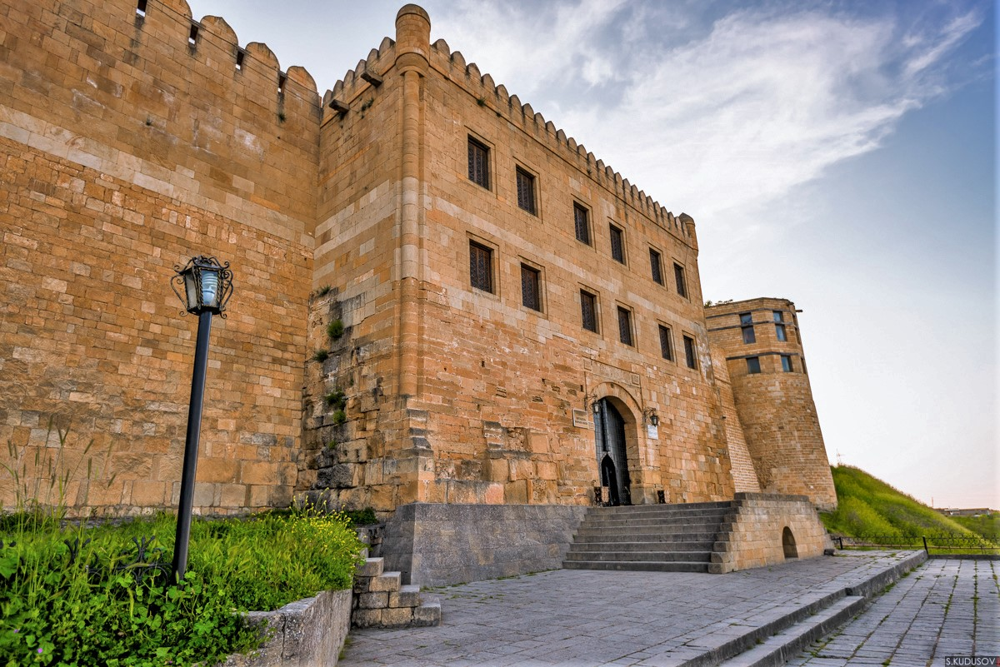

Описание маршрута
Дербент — это живая история России, один из старейших городов мира, расположенный на побережье Каспийского моря. Этот однодневный пеший маршрут составлен так, чтобы вы смогли почувствовать атмосферу древнего Востока, пройти сквозь оборонительные врата Персии и прикоснуться к вековым тайнам Кавказа.
Ключевые точки нашего маршрута
- Цитадель Нарын-Кала — величественная крепость VI века, возвышающаяся над городом.
- Древние магалы — старинные лабиринты жилых кварталов у подножия крепостных стен.
- Джума-мечеть — старейший действующий мусульманский храм на территории СНГ.
- Набережная Каспия — финальная точка для отдыха под шум прибоя на закате.
